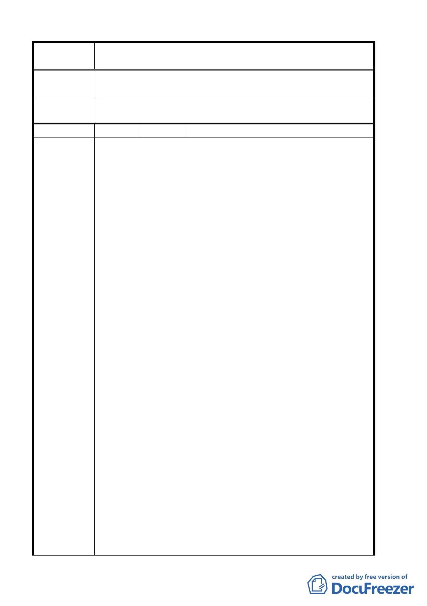

案 名 臺北市北投區都市計畫通盤檢討案（主要計畫）案
專 案小組 審 93.12.27 專案小組第十次審查會議：所提意見不符本案通盤檢
查 結 論 討原則，建議另案辦理變更。
委員會議
決議
同意依專案小組審查結論辦理。
編 號 ４ 陳情人 國泰建設股份有限公司
一、行義段二小段六四二、六四四、六四六、六四七、六四八、
六五 0、六五一、六五二之一、六五三、六五七、六五八、
六六 0、六六二、六六三、六六四、六六七、六七 0 地號因
目前都市計畫編定為保護區，於此次公展計畫中仍維持原
保護區之使用分區不變。
二、上開土地於陽明山管理局改制前已將其列入都市計畫公共
設施完竣地區，並於民國五十九年八月八日就基地內道路
系統完成地籍逕為分割工作，隨後並埋設道路中心樁以配
合建築使用。而 貴府亦曾於民國六十三年七月十一日以
(63)府工二字第 34835 號公開展覽『北投區石牌櫻花崗細
部計畫案』，並擬將之變更為住宅區，但因當時內政部規
定，細部計畫之變更需俟主要計畫通盤檢討時才可列入考
慮，故當時未予變更。因此可知即使當時未予變更，亦可
見主管官署一向極重視本地區之建設，並認為上開土地以
陳情理由
作住宅區之分區使用為宜。
三、上開土地東側及南側之鄰近土地，於當時未獲變更為住宅
區時搶先建築為一、二樓住宅，惟本公司居於守法之前提，
仍秉持須依法定程序變更為住宅區後再依法建築使用之原
則，並未違法搶建。未料民國六十八年 貴府通盤檢討台
北市保護區時，反而承認既存搶建事實，於當年二月十二
日以(68)府工二字第 01786 號公告實施『變更本市都市計
畫保護區(通盤檢討)案』中，將上開土地東側及南側鄰近
地區已建房屋之保護區變更為住宅區，承認違法為合法，
反而致使本公司上開土地原擬等依法變更為住宅區後再行
建築使用者，於此次及其後歷次通盤檢討時均被排除在
外，至今仍無法開發建築使用。此種都市計畫土地使用政
策不僅讓守法者權益受損，亦有失公平原則。
四、本公司上開土地係屬貴府所定義之「夾雜於符合檢討原則
之保護區現有聚落內之空地」，且相關條件亦均符合變更為
第 7 頁，共 49 頁